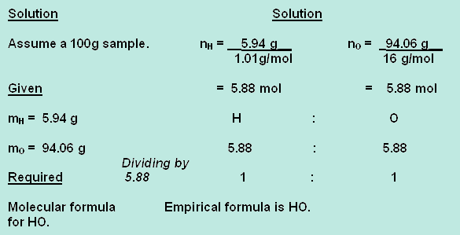
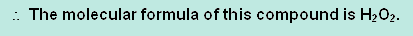

SCH3U: Chemistry, Grade 11, University Preparation
Unit 3: Quantities in Chemical Reactions
Activity 3: Percentage Composition, Empirical, and Molecular Formulas
Answer

|
6. A clear, colourless liquid was analyzed and it was found to contain 94.06% oxygen and 5.94% hydrogen. Its molecular molar mass was 34.02 g/mol. Find the molecular formula of this compound. |
|---|

|
 Note: Up to this point, the steps in this solution are the same as those for the empirical formula type of question. The rest of the steps are the extra ones to find the molecular formula. Solution (continued) The empirical molar mass for HO = 1.01 g/mol + 16 g/mol = 17.01 g/mol Next, the ratios of the molecular molar mass and empirical molar mass are compared. Molecular molar mass = _34.02 = 2 Since the molecular molar mass is times the empirical molar mass, then the subscripts of the empirical formula are multiplied by a factor of 2.  |
|---|
Close Window